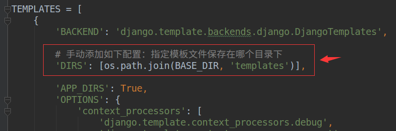

如果命令行创建的项目，需要手动配置模板文件目录，如果是Pycharm创建的项目，则无需配置
templates，后续开发模板文件会放在此目录下在项目的配置文件settings.py文件中，进行模板目录的配置，如下：

在templates目录中新建一个模板文件，如show.html
1 <!DOCTYPE html>
2 <html lang="en">
3 <head>
4 <meta charset="UTF-8">
5 <title>Title</title>
6 </head>
7 <body>
8 <!-- 显示模板变量 -->
9 <h1>{我的名字是:{ name }}</h1>
10
11 </body>
12 </html>
方法一:通过render函数
1 from django.shortcuts import render
2
3 def index(request):
4 data_dict = {'name': 'django' }
5 # 参数1：请求对象
6 # 参数2：模块路径
7 # 参数3：字典数据
8 return render(request, 'index.html', data_dict)
方法二:通过Template对象的render方法
1 from django.template import loader
2
3 def index(request):
4 # 获取模板对象
5 template = loader.get_template('index.html') # type: Template
6 # 渲染得到字符串
7 data_dict = {'name': 'django' }
8 html_str = template.render(data_dict)
9 # 响应请求
10 return HttpResponse(html_str)
变量名必须由字母、数字、下划线（不能以下划线开头）和点组成，语法如下：
{{ 变量 }}
模板变量可以使python的内建类型，也可以是对象。
1）for循环：
{% for item in 列表 %}
{{forloop.counter}} <1-- 表示当前是第几次循环，从1开始 -->
{{forloop.counter0}} <!-- 表示当前是第几次循环，从0开始 -->
{% empty %} 查下
列表为空或不存在时执行此逻辑
{% endfor %}
2）if条件：
{% if ... %}
逻辑1
{% elif ... %}
逻辑2
{% else %}
逻辑3
{% endif %}
比较运算符如下：
==
!=
<
>
<=
>=
布尔运算符如下：
and
or
not
注意：运算符左右两侧必须有空格。
{% if a == 1 %} # 正确
{% if a==1 %} # 错误语法如下:
如果过滤器需要参数，则使用冒号:传递参数。
变量|过滤器:参数 {% if forloop.counter|divisibleby:2 %}
列举几个如下：default，默认值，如果变量不存在时则返回默认值。
data|default:'默认值'
date，日期，用于对日期类型的值进行字符串格式化，常用的格式化字符如下：
value|date:"Y年m月j日 H时i分s秒"1）单行注释语法如下：
{#...#}
2）多行注释使用comment标签，语法如下：
{% comment %}
...
{% endcomment %}block ，实现子模板对父模块内容的重写父模板
如果发现在多个模板中某些内容相同，那就可以使用block标签把这段内容定义到父模板中。
{% block 块名称 %}
预留区域，可以编写默认内容，也可以没有默认内容
{% endblock %}
子模板
使用extends标签继承父模板，写在子模板文件的第一行。
{% extends "父模板路径" %}
对有需要的block进行重写：
可以使用 block.super 来包含父模板的块中定义的内容，如下
{% block 名称 %}
子模板的内容
{{ block.super }} 显示父模板中block的内容
{% endblock %}django文档参考
<https://docs.djangoproject.com/zh-hans/2.1/ref/templates/builtins/>
django过滤器大全
<https://www.cnblogs.com/Deaseyy/p/10859893.html>